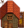

Void Chicken
| Void Chicken | |
| Well cared-for adult chickens lay eggs every day. Lives in the coop. | |
| Information | |
| Building |  Big Coop |
| Purchase Price | N/A |
| Produce | |
The Void Chicken is an animal that lives in a Big Coop. Void Chickens can be hatched by placing a Void Egg into an Incubator, taking  9,000m (5d 16h 40m) to incubate, or
9,000m (5d 16h 40m) to incubate, or  4,500m (2d 21h 40m) with the Coopmaster Profession. There is no other way to obtain a Void Chicken.
4,500m (2d 21h 40m) with the Coopmaster Profession. There is no other way to obtain a Void Chicken.
Produce
- Main article: Animals#Produce
Void Chickens who eat every day mature after 3 nights have passed. A mature and fed void chicken produces a Void Egg every day, which can be placed in an Incubator to hatch another void chicken, or sold for  65g. The Void Egg can be used in cooking recipes calling for an egg.
65g. The Void Egg can be used in cooking recipes calling for an egg.
A Void Egg can be placed in the Mayonnaise Machine to produce Void Mayonnaise, which sells for  275g.
275g.
| Image | Name | Description | Sell Price | ||||||||
|---|---|---|---|---|---|---|---|---|---|---|---|
| Void Egg | A jet-black egg with red flecks. It's warm to the touch. |
|
Selling
Void Chickens may be sold the same way as normal chickens. The more hearts the animal has, the higher its sell price. A new-born chick sells for  252g, and a maximum-heart Void Chicken for
252g, and a maximum-heart Void Chicken for  1,040g, the same as for normal chickens.
1,040g, the same as for normal chickens.
To sell a coop or barn animal, right-click the animal after petting. The friendship/mood interface appears. Move the cursor over the gold coin button at the right to see how much you can sell the animal for. Click that button and the confirmation that follows to complete the sale.
| Animals and Produce | |
|---|---|
| Coop | Chicken (Egg • Large Egg • Brown Egg • Large Brown Egg) • Dinosaur (Dinosaur Egg) • Duck (Duck Egg • Duck Feather) • Golden Chicken (Golden Egg) • Rabbit (Wool • Rabbit's Foot) • Void Chicken (Void Egg) |
| Barn | Cow (Milk • Large Milk) • Goat (Goat Milk • Large Goat Milk) • Sheep (Wool) • Ostrich (Ostrich Egg) • Pig (Truffle) |
| Fish Pond | Fish (Roe) |
| Slime Hutch | Slimes (Slime • Slime Ball • Slime Egg) |
| Other | Cat • Dog • Horse • Turtle |